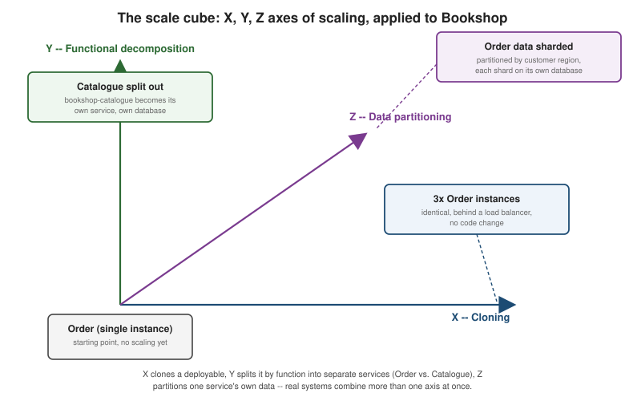

Architectural Styles: Monolith, Modular Monolith, Microservices
|
This content was generated with the assistance of AI and should be verified against the official documentation before being relied on in production. |
This page defines the vocabulary the rest of the Architecture Decisions and Migration Paths section relies on. The running example throughout is Bookshop: a single Spring Boot 4.1 application, one PostgreSQL database, and five business capabilities — Catalogue (books, authors, search), Orders (cart, checkout), Payments (charge authorization), Shipping (fulfillment), and Customers (accounts, authentication) — that Choosing: Monolith or Microservices? and the migration pages later strangle apart one capability at a time.
Architecture is a decision about quality attributes, not features
A functional requirement — "customers can add a book to their cart" — can be satisfied by almost any architecture. What actually varies between a monolith and a microservices system is how well each one supports quality attributes: maintainability (how cheaply can a team keep changing it), testability (how fast is the feedback loop from a code change to a passing test), and scalability (can the parts that need more capacity get it without dragging the rest of the system along). Richardson makes this the opening move of Microservices Patterns: choosing an architectural style is choosing which quality attributes to optimize for, at the cost of others, not choosing which features to build.
An architectural style constrains the implementation view — the set of things that actually get built, deployed, and run — more than it constrains the logical view of how responsibilities are divided inside the code. Concretely:
-
A monolithic style packages the whole application as one deployable, one executable artifact: one WAR or one executable JAR, one running process (or one horizontally cloned set of identical processes), one database.
-
A microservices style packages the application as many small, loosely coupled services, each one independently deployable: each has its own build, its own deployment pipeline, its own runtime process, and — per the database-per-service rule the Architectural Patterns section already established — typically its own database.
Both styles can express the exact same domain model and the exact same feature set; the difference is entirely in how many deployables that model is split across, and how those deployables communicate.
The modular monolith: the middle ground
Between those two extremes sits the modular monolith: still one deployable, one process, one database at runtime — so it keeps the monolith’s simple build, test, and deployment story — but with the internal boundaries between Catalogue, Orders, Payments, Shipping, and Customers made explicit and, crucially, enforced, not just a convention that erodes the first time someone is in a hurry. That enforcement is what turns "a monolith organized into packages" (any team can claim that on day one, and few keep it true a year later) into a modular monolith:
-
Spring Modulith verifies module boundaries at build time: each top-level package under
com.example(catalogue,orders,payments,shipping,customers) becomes an application module, cross-module access is only allowed through each module’s explicitly exposed API package, and a JUnit test (ApplicationModules.of(BookshopApplication.class).verify()) fails the build the momentordersreaches directly intocatalogue.internalinstead of going through `catalogue’s published interface. -
Plain Java module boundaries (the
module-info.javamodule system) or even disciplined package-private visibility plus an architecture-testing library (ArchUnit) achieve the same effect without Spring Modulith specifically. -
On .NET, the equivalent is one project per module inside a single solution (
Bookshop.Catalogue,Bookshop.Orders,Bookshop.Payments, …), each referencing only the other projects' public contracts, with the solution still building and deploying as a single executable.
The modular monolith is the style this whole section keeps returning to: it is the natural next step for a Bookshop that has outgrown a tangled monolith but is not yet ready to pay for distributed-systems complexity (see Benefits and Drawbacks of Microservices), and it is the shape Migration Path: From a Monolith to a Modular Monolith walks through step by step.
The same five Bookshop capabilities, drawn as an undifferentiated monolith, as a modular monolith with enforced (but still in-process) module boundaries, and as fully independent microservices communicating over the network — each arrow to the right is a step the migration pages in this section describe in detail.
Layered and hexagonal views
Independently of how many deployables an architecture has, each deployable (or each module inside one) still needs an internal, logical shape. The traditional layered (three-tier) view — presentation, business logic, data access, stacked so each layer only calls the one below it — is easy to draw but tends to let persistence concerns leak upward and makes the business logic hard to test without a database. The Spring Boot Architectural Patterns and Structuring the Code pages already make the case in depth for the alternative used throughout this site: a hexagonal (ports-and-adapters) view, where the domain and application logic sit at the center depending on nothing but abstractions (ports), and every technology-specific concern — a REST controller, a JPA repository, a Kafka listener — is an adapter plugged into a port from the outside. Hexagonal is the natural shape for a microservice or a modular-monolith module specifically because each one is already a bounded, independently testable unit: giving that unit a hexagon of its own (rather than one hexagon per deployable) is what keeps Catalogue’s persistence choices from leaking into Orders even before Catalogue becomes its own service.
The scale cube: a vocabulary for scaling
"Scaling" is often used as if it meant one thing. The scale cube (Abbott and Fisher’s "X, Y, Z model of scalability" from The Art of Scalability, which Richardson adopts as his vocabulary for scaling) names three genuinely different axes, and most real systems combine more than one:
-
X-axis — cloning. Run N identical copies of the same deployable behind a load balancer, with no code change at all. Bookshop already does this for the whole monolith today: five identical
bookshop.jarinstances behind a load balancer handle more traffic, at the cost of every instance still needing enough memory for Catalogue’s full-text search index even on requests that never touch Catalogue. -
Y-axis — functional decomposition. Split the system by what it does: Catalogue becomes its own service, Orders becomes its own service, and so on. This is what turns a monolith into microservices, and it is the only axis of the three that changes the logical architecture, not just the deployment topology.
-
Z-axis — data partitioning. Split by who or what the request is about: shard Orders' data by customer region, or partition Catalogue’s search index by book category, so each partition (and each service instance handling it) only needs to hold a slice of the data.

X-axis cloning is nearly free and applies equally to a monolith or a microservice; Y and Z are where microservices earn their keep, because they let each capability scale independently on whichever axis (or combination) fits it — Catalogue mostly needs X (more identical read replicas) while Payments mostly needs Z (partition by region for latency, not raw throughput).
Microservices vs. SOA
Microservices are often confused with the older service-oriented architecture (SOA) style they superficially resemble — both split an application into services — but Richardson’s comparison highlights real differences in practice:
| Dimension | SOA | Microservices |
|---|---|---|
Integration |
Smart pipes: a central Enterprise Service Bus (ESB) carries routing, transformation, and orchestration logic |
Dumb pipes: plain HTTP/REST or lightweight messaging; smarts live in the endpoints, not the pipe |
Data model |
Often one global, canonical data model shared by every service |
Each service owns its own data model and, per database-per-service, its own database |
Service size |
Larger, often mapped to whole business units or shared enterprise capabilities |
Smaller, mapped to a single bounded context or business capability (Bookshop’s Catalogue, Orders, …) |
Typical deployment |
Application-server hosted, frequently shared across services |
Independently deployable, typically one container per service |
Applying an ESB-and-shared-model SOA mindset while calling the result "microservices" is a common way teams end up with services that look independently deployed but are not independently changeable — which leads directly to the next anti-pattern.
The distributed monolith anti-pattern
A distributed monolith looks like microservices from the deployment diagram — several services, several repositories, several pipelines — but behaves like a monolith at release time: the services are so tightly coupled that most changes still require redeploying several of them together, in a coordinated order, to avoid breaking each other. It is the worst of both worlds: all of the monolith’s coordinated-release friction, plus all of the network latency, partial-failure, and operational overhead of a distributed system, with none of microservices' promised independent deployability actually delivered.
The most common causes are a shared database two or more services both read and write directly instead of going
through each owning service’s API, synchronous call chains where one request fans out through four other
services before it can respond, and a shared library of domain types that both services must upgrade in lockstep.
A Bookshop bookshop-orders service that reaches directly into bookshop-catalogue’s database to read book
prices — instead of calling `bookshop-catalogue’s API or subscribing to its `PriceChanged events — is exactly
this trap: bookshop-catalogue can no longer change its schema without coordinating a simultaneous release of
bookshop-orders, which is precisely the coupling microservices are meant to remove.
Benefits and Drawbacks of Microservices returns to this
same failure mode from the cost side, and the migration pages later in this section show how to extract a
service without falling into it.